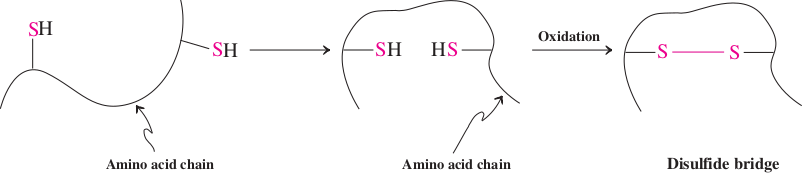
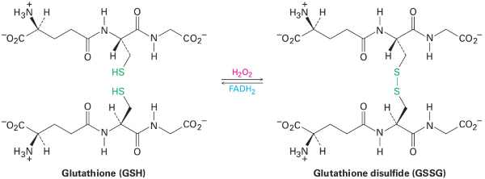

Thiols
The functional group of a thiol is an —SH (sulfhydryl) group bonded to an sp3 hybridized carbon. Figure 10.4 shows a Lewis structure and a ball-and-stick model of methanethiol, CH3SH, the simplest thiol. The C—S—H bond angle in methanethiol is 100.3°. By way of comparison, the H9S9H bond angle in H2S is 93.3°. If a sulfur atom were bonded to two other atoms by fully hybridized sp3 hybrid orbitals, bond angles about sulfur would be approximately 109.5°. If, instead, a sulfur atom were bonded to two other atoms by unhybridized 3p orbitals, bond angles would be approximately 90°. The fact that the C—S—H bond angle in methanethiol is 100.3° and the H—S—H bond angle in H2S is 93.3° indicates that there is considerably more p-character (and hence less s-character) in the bonding orbitals of divalent sulfur than there is in those of divalent oxygen.
Nomenclature
In the older literature, thiols are often referred to as mercaptans, which literally means mercury capturing, from the Latin mercurium, mercury, and captare, to capture, because of its ability to precipitate mercury (and other heavy metal) ions. They react with Hg2+ in aqueous solution to give sulfide salts as insoluble precipitates. Thiophenol, C6H5SH, for example, gives (C6H5S)2Hg. In the IUPAC system, thiols are named by selecting as the parent alkane the longest chain of carbon atoms that contains the —SH group. To show that the compound is a thiol, retain the final -e in the name of the parent alkane and add the suffix -thiol. The location of the —SH group takes precedence over alkyl groups and halogens in numbering the parent chain. In the IUPAC system, —OH takes precedence over —SH in both numbering and naming. In compounds containing these two functional groups, an —SH group is indicated by the IUPAC prefix sulfanyl-. Alternatively, it may be indicated by the common-name prefix mercapto-.
Common names for simple thiols are derived by naming the alkyl group bonded to —SH and adding the word mercaptan.
CH3CH2SH
Ethanethiol
(Butyl mercaptan)
(Isobutyl mercaptan)
(β-Mercaptoethanol)
Physical Properties
The most outstanding physical characteristic of low-molecular-weight thiols is their stench. The scent of skunks is primarily the result of the following two thiols.
CH3C=C—CH2SH
2-Butene-1-thiol
(Isopentyl mercaptan)
A blend of low-molecular-weight thiols is added to natural gas as odorants. The most common of these is 2-methyl-2-propanethiol (tert-butyl mercaptan) because it is the most resistant to oxidation and has the greatest soil penetration. 2-Propanethiol is also used for this purpose, usually as a blend with 2-methyl-2-propanethiol.
Because of the very low polarity of the S—H bond, thiols show little association by hydrogen bonding. Consequently, they have lower boiling points and are less soluble in water and other polar solvents than alcohols of comparable molecular weights. Table 10.3 gives names and boiling points for three low-molecular-weight thiols. Shown for comparison are boiling points for alcohols that contain the same number of carbon atoms.
We already illustrated the importance of hydrogen bonding in alcohols by comparing the boiling points of ethanol (bp 78°C) and its constitutional isomer dimethyl ether (bp 224°C). By comparison, the boiling point of ethanethiol is 35°C, and that of its constitutional isomer dimethyl sulfi de is 37°C.
| CH3CH2SH | CH3SCH3 |
| Ethanethiol | Dimethyl sulfide |
| bp 35°C | bp 37°C |
The fact that the boiling points of these constitutional isomers are almost identical indicates that little or no association by hydrogen bonding occurs between thiol molecules.
| Thiol | bp (°C) | Alcohol | bp (°C) |
|---|---|---|---|
| Methanethiol | 6 | Methanol | 65 |
| Ethanethiol | 35 | Ethanol | 78 |
| 1-Butanethiol | 98 | 1-Butanol | 117 |
Thiols in Biological Molecules
The thiol group is found in the amino acid L-cysteine. L-Cysteine is important because the thiol groups of pairs of cysteines are oxidized to disulfi de bonds (Section 10.9G), which are a major factor in stabilizing the three-dimensional structure of protein molecules. The thiol group of cysteine functions as a nucleophile in certain enzyme mechanisms. In addition, it binds the metal in certain metal-containing enzymes.

(L-Cysteine)
Preparation
The most common preparation of thiols, RSH, depends on the high nucleophilicity of the hydrosulfide ion, HS2 (Section 9.3E). Sodium hydrosulfide is prepared by bubbling H2S through a solution of NaOH in water or aqueous ethanol. Reaction of HS2 with a haloalkane gives a thiol.
| CH3(CH2)8CH2I | + Na+SH– | SN2 ⟶ ethanol | CH3(CH2)8CH2SH | + | Na+I– | |
| 1-Iododecane | Sodium hydrosulfide | 1-Decanethiol |
In practice, the scope and limitations of this reaction are governed by the limitations of the SN2 reaction and by competition between substitution and β-elimination. The reaction is most useful for preparation of thiols from primary halides. Yields are lower from secondary halides because of the competing β-elimination (E2) reaction. With tertiary halides, β-elimination (E2) predominates, and the alkene formed by dehydrohalogenation is the major product. In a commercial application of thiol formation by this nucleophilic substitution, the sodium salt of thioglycolic acid is prepared by the reaction of sodium hydrosulfi de and sodium iodoacetate.
| Na+SH– | + |
|
SN2 ⟶ |
|
+ | Na+I– |
The sodium and ammonium salts of thioglycolic acid are used in cold waving of hair. These compounds work by breaking the disulfide bonds of hair proteins, which maintain the overall structure of hair (Section 27.6C). The disulfide bonds are subsequently reformed by oxidation (Section 10.9G) in a second step. The calcium salt of thioglycolic acid is used as a depilatory; that is, it is used to remove body hair.
(HSCH2COO−)2Ca2+
Calcium mercaptoacetate
(Calcium thioglycolate)
Acidity
Hydrogen sulfide is much more acidic than water.
H2O + H2O ⇌ HO− + H3O+ pKa = 15.7
H2S + H2O ⇌ HS− + H3O+ pKa = 7.0
Similarly, thiols are stronger acids than alcohols. Compare, for example, the pKa values of ethanol and ethanethiol in dilute aqueous solution.
CH3CH2OH + H2O ⇌ CH3CH2O− + H3O+ pKa = 15.9
CH3CH2SH 1 H2O ⇌ CH3CH2S− + H3O+ pKa = 10.5
The greater acidity of thiols compared to alcohols can be explained by the fact that sulfur (a third-period element) is larger than oxygen (a second-period element). The negative charge on an alkylsulfi de ion (RS−) is delocalized over a larger area and is therefore more stable than the negative charge on an alkoxide ion (RO−).
Thiols are sufficiently strong acids so that when dissolved in aqueous sodium hydroxide, they are converted completely to alkylsulfide salts.
| CH3CH2SH | + | Na+OH− | ⟶ | CH3CH2S−Na+ | + | H2O |
| pKa = 10.5 | pKa = 15.7 | |||||
| (Stronger acid) | (Stronger base) | (Weaker base) | (Weaker acid) |
To name salts of thiols, give the name of the cation first, followed by the name of the alkyl group to which is attached the suffix -sulfide. For example, the sodium salt derived from ethanethiol is named sodium ethylsulfide.
Oxidation
As a third-row element with d orbitals, sulfur’s valence shell can expand to accommodate more electrons than are allowed by the octet rule. We have already seen that, in some of its compounds, sulfur is surrounded by 10 or even 12 valence electrons, and this capacity enables sulfur compounds to undergo reactions inaccessible to the corresponding oxygen analogs. For example, oxidation of thiols with strong oxidizing agents, such as hydrogen peroxide or potassium permanganate, gives the corresponding sulfonic acids. In this way, methanethiol is converted into methanesulfonic acid. Sulfonic acids react with PCl5 to give sulfonyl chlorides, which are used in sulfonate synthesis, as discussed in Section 9-4.
| 2 CH3—SH | KMnO4 ⟶ | |
| Methanethiol | Methane sulfornic acid |
More careful oxidation of thiols, by the use of Br2 or I2 results in the formation of disulfides (RSSR′). The reaction is easily reversed, and a disulfide can be reduced back to a thiol by treatment with zinc and acid or with aqueous sodium borohydride.
| 2 R—SH | I2 ⇌ Zn, H+ | R—S—S—R | + 2HI |
| A thiol | A disulfide |
For example
| 2 CH3CH2CH2—SH | + | I2 | ⟶ | CH3CH2CH2—S—S—CH2CH3 | + 2HI |
| 1-Propanethiol | Dipropyl disulfide |
Thiols are also oxidized to disulfi des by molecular oxygen
| 2 R—SH | 1/2O2 | ⟶ | RSSR | 2HI |
| A thiol | A disulfide |
In fact, thiols are so susceptible to oxidation that they must be protected from contact with air during storage.
Reduction::
| 2 CH3CH2CH2—S—S—CH2CH3 | + | NaBH4 | H2O ⟶ | 2CH3CH2CH2SH | + 2HI |
Disulfide formation by oxidation of thiols and its reverse are important biological processes, although nature uses much milder reagents and conditions than those depicted above. Many proteins and peptides contain free SH groups that form bridging disulfide linkages. Nature exploits this mechanism to link amino acid chains. By thus helping to control the shape of enzymes in three dimensions, the mechanism makes biocatalysis far more efficient and selective.
Disulfide formation is also involved in the process by which cells protect themselves from oxidative degradation. A cellular component called glutathione removes potentially harmful oxidants and is itself oxidized to glutathione disulfide in the process. Reduction back to the thiol requires the coenzyme reduced flavin adenine dinucleotide, abbreviated FADH2 .
